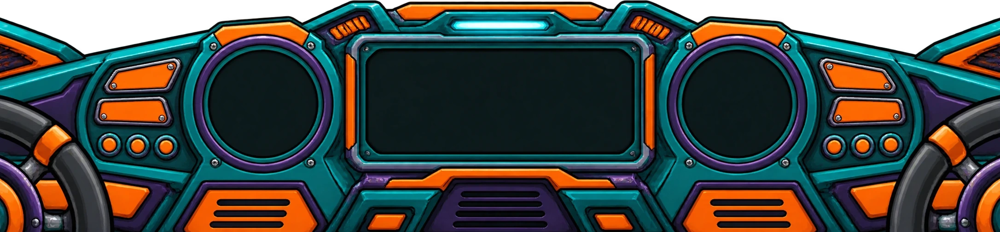

A little weird. A lot of bass.
Scroll up to enter · scroll down to returnPick your world.
Hover & scroll up to enter.
Scroll down to fly home.
A little weird. A lot of bass.
Scroll up to enter · scroll down to returnHover & scroll up to enter.
Scroll down to fly home.
